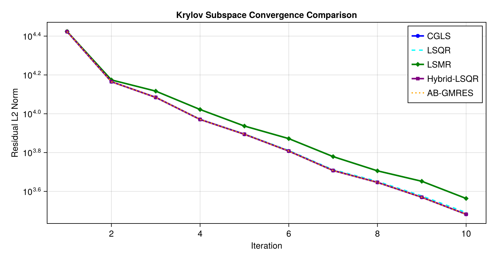
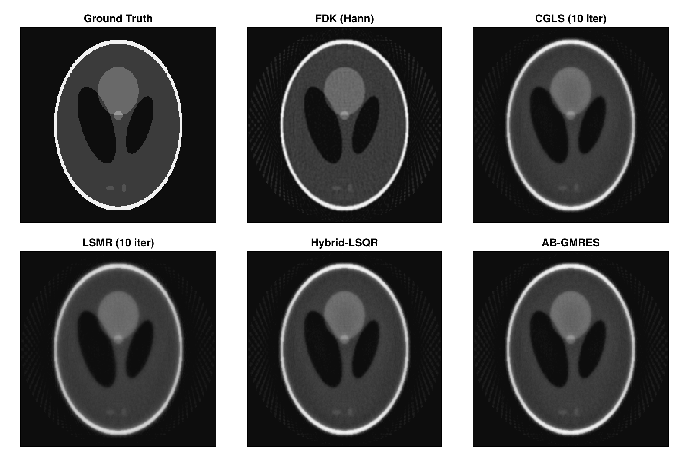
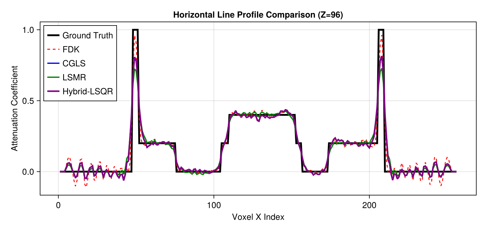

Krylov Subspace Solvers in Tigre.jl: CGLS, LSQR, LSMR, & Hybrid Methods
Tomographic iterative reconstruction poses large-scale linear least-squares problems of the form: $\min_x \frac{1}{2} \| A x - b \|_2^2$ where $A$ is the cone-beam projection operator (Ax), $A^T$ is the backprojection operator (Atb), and $b$ is the measured sinogram.
Because $A$ cannot be explicitly formed or stored in memory for 3D volumes (which often contain millions to billions of voxels), matrix-free Krylov subspace methods are the gold standard for fast, high-accuracy CT reconstruction. These methods iteratively construct optimal polynomial approximations in the Krylov subspace $\mathcal{K}_k(A^T A, A^T b)$ using only forward and adjoint projection calls.
Solvers Benchmarked in this Tutorial
- CGLS (Conjugate Gradient for Least Squares): Solves the normal equations $A^T A x = A^T b$ directly using conjugate gradients with implicit $A^T A$ operations.
- LSQR (Golub-Kahan Bidiagonalization): Analytically equivalent to CGLS in exact arithmetic, but provides superior numerical stability in ill-conditioned and rank-deficient regimes.
- LSMR (Minimal Residual on Normal Equations): Solves $\min_x \| A^T (A x - b) \|_2$, guaranteeing monotonically non-increasing normal equation residuals.
- Hybrid-LSQR (Subspace Regularization): Projects the problem into a Krylov subspace of dimension $k$ and solves a projected Tikhonov regularized problem at each step.
- AB-GMRES / BA-GMRES: Generalized Minimal Residual formulations adapted for unsymmetric and rectangular tomographic operators.
Key Tigre.jl Features Demonstrated
prepare_krylov_workspace: One-time preallocation of projection and volume buffers for zero-allocation high-throughput iterative loops.- In-place computation (
cgls!,lsqr!,lsmr!): Direct volume updates eliminating intermediate garbage collection overhead. return_history = true: Built-in convergence tracking (IterativeHistory) logging residual norms and early stopping criteria.measure_quality&crop_cbct!: Quantitative evaluation (PSNR, SSIM, RMSE, NCC) within cylindrical FOV.
Prerequisites
This tutorial uses Makie (recommended backend: CairoMakie) for visualization. If CairoMakie is not installed in your environment, add it by running using Pkg; Pkg.add("CairoMakie").
using LinearAlgebra
using Printf
using Random
using CairoMakie
using Tigre1. Geometry Setup & Ground Truth Phantom
We set up a realistic 3D Cone-Beam geometry with 100 projection angles covering a full $360^\circ$ rotation, simulating an industrial micro-CT or clinical CBCT scanner. We then generate a 3D Shepp-Logan phantom and compute forward projections b = Ax(x) with realistic CT noise (Poisson photon quantum noise and Gaussian electronic readout noise).
nangles = 100
angles = LinRange(0f0, 2f0 * Float32(pi), nangles + 1)[1:end-1] |> collect
geo = Geometry(
mode = :cone,
angles = angles,
nVoxel = (256, 256, 256),
sVoxel = (256f0, 256f0, 256f0),
nDetector = (320, 320),
sDetector = (480f0, 480f0),
DSO = 1000f0,
DSD = 1500f0
)
# Generate Shepp-Logan 3D volume
phantom = shepp_logan_3d(geo.nVoxel)
# Clean forward projection
proj_clean = Ax(phantom, geo)
# Add realistic CT noise (I0 = 100,000 incident photons per detector pixel)
proj_noisy = add_ct_noise(proj_clean; I0 = 100000.0, gaussian = (0f0, 0.5f0), rng = MersenneTwister(42))
# Analytical FDK baseline for comparison
rec_fdk = crop_cbct!(fdk(proj_noisy, geo; filter = :hann), geo)
println("Geometry & data generated:")
println(" Volume size: ", volume_size(geo))
println(" Projection size: ", projection_size(geo))
println(" Projections: ", length(angles), " views")
Geometry & data generated:
Volume size: (256, 256, 256)
Projection size: (320, 320, 100)
Projections: 100 views2. Zero-Allocation High-Throughput: prepare_krylov_workspace
Each iteration of a Krylov solver requires evaluating matrix-vector products $A p$ and $A^T r$, maintaining direction vectors, and storing intermediate volume/projection buffers.
In high-performance production pipelines (e.g. 4D dynamic CT or batch manufacturing inspection), repeatedly allocating these 3D arrays introduces substantial memory churn and garbage collection pauses.
Tigre.jl provides prepare_krylov_workspace(geo; maxiter):
- Preallocates all necessary volume and projection temporary arrays.
- Preallocates the Krylov subspace basis matrices when running subspace-expanded solvers like
hybrid_lsqr. - Can be reused across multiple reconstruction runs, time steps, or algorithm comparisons.
# Preallocate Krylov workspace for up to 15 iterations
max_iter = 10
ws = prepare_krylov_workspace(geo; maxiter = max_iter)
println("KrylovWorkspace allocated:")
println(" Projection buffer shape: ", size(ws.proj_a))
println(" Volume buffer shape: ", size(ws.vol_a))
println(" Subspace basis size: ", ws.subspace !== nothing ? size(ws.subspace.vol_basis) : "none")
KrylovWorkspace allocated:
Projection buffer shape: (320, 320, 100)
Volume buffer shape: (256, 256, 256)
Subspace basis size: (11, 16777216)3. Benchmarking Krylov Solvers with History Tracking
We now benchmark 5 Krylov subspace algorithms using the preallocated workspace ws and logging full convergence histories via return_history = true:
- CGLS: Standard Conjugate Gradient for Least Squares
- LSQR: Golub-Kahan bidiagonalization with superior conditioning
- LSMR: Minimal residual on normal equations with monotonic residual decrease
- Hybrid-LSQR: Projected Tikhonov regularization in the Krylov subspace ($\lambda = 0.5$)
- AB-GMRES: Range-space Generalized Minimal Residual solver
niter = 10
println("--> Running CGLS...")
t_cgls = @timed cgls(proj_noisy, geo, niter; return_history = true, workspace = ws)
rec_cgls, hist_cgls = t_cgls.value
crop_cbct!(rec_cgls, geo)
println("--> Running LSQR...")
t_lsqr = @timed lsqr(proj_noisy, geo, niter; return_history = true, workspace = ws)
rec_lsqr, hist_lsqr = t_lsqr.value
crop_cbct!(rec_lsqr, geo)
println("--> Running LSMR...")
t_lsmr = @timed lsmr(proj_noisy, geo, niter; return_history = true, workspace = ws)
rec_lsmr, hist_lsmr = t_lsmr.value
crop_cbct!(rec_lsmr, geo)
println("--> Running Hybrid-LSQR (lambda = 0.5)...")
t_hybrid = @timed hybrid_lsqr(proj_noisy, geo, niter; lambda = 0.5f0, return_history = true, workspace = ws)
rec_hybrid, hist_hybrid = t_hybrid.value
crop_cbct!(rec_hybrid, geo)
println("--> Running AB-GMRES...")
t_ab = @timed ab_gmres(proj_noisy, geo, niter; return_history = true, workspace = ws)
rec_ab, hist_ab = t_ab.value
crop_cbct!(rec_ab, geo)
@printf("All solvers completed:\n")
@printf(" CGLS: %.3f s, final residual = %.2f\n", t_cgls.time, hist_cgls.residual_l2[end])
@printf(" LSQR: %.3f s, final residual = %.2f\n", t_lsqr.time, hist_lsqr.residual_l2[end])
@printf(" LSMR: %.3f s, final residual = %.2f\n", t_lsmr.time, hist_lsmr.residual_l2[end])
@printf(" Hybrid-LSQR: %.3f s, final residual = %.2f\n", t_hybrid.time, hist_hybrid.residual_l2[end])
@printf(" AB-GMRES: %.3f s, final residual = %.2f\n", t_ab.time, hist_ab.residual_l2[end])
--> Running CGLS...
--> Running LSQR...
--> Running LSMR...
--> Running Hybrid-LSQR (lambda = 0.5)...
--> Running AB-GMRES...
All solvers completed:
CGLS: 4.223 s, final residual = 3033.92
LSQR: 2.278 s, final residual = 3097.99
LSMR: 3.296 s, final residual = 3659.87
Hybrid-LSQR: 13.313 s, final residual = 3034.01
AB-GMRES: 9.705 s, final residual = 3032.404. Quantitative Convergence & Residual Evolution
We inspect the logged residual_l2 history from each solver. Notice the difference in convergence profiles:
- LSMR minimizes $\|A^T (A x - b)\|_2$, providing a smooth, strictly decreasing descent.
- CGLS / LSQR minimize $\|A x - b\|_2$ across expanding search directions.
- Hybrid-LSQR applies subspace regularization, preventing noise over-fitting in later iterations.
iters = 1:niter
fig = Figure(size = (800, 420))
ax = Axis(fig[1, 1], title = "Krylov Subspace Convergence Comparison",
xlabel = "Iteration", ylabel = "Residual L2 Norm", yscale = log10)
scatterlines!(ax, iters, hist_cgls.residual_l2, label = "CGLS", color = :blue, linewidth = 2.5)
lines!(ax, iters, hist_lsqr.residual_l2, label = "LSQR", color = :cyan, linewidth = 2, linestyle = :dash)
scatterlines!(ax, iters, hist_lsmr.residual_l2, label = "LSMR", color = :green, marker = :diamond, linewidth = 2.5)
scatterlines!(ax, iters, hist_hybrid.residual_l2, label = "Hybrid-LSQR", color = :purple, marker = :rect, linewidth = 2.5)
lines!(ax, iters, hist_ab.residual_l2, label = "AB-GMRES", color = :orange, linewidth = 2, linestyle = :dot)
axislegend(ax, position = :rt)
fig
5. Image Quality Assessment & Visual Slice Inspection
We evaluate reconstruction accuracy against the ground truth phantom using measure_quality:
- PSNR (Peak Signal-to-Noise Ratio): higher is better.
- SSIM (Structural Similarity Index): closer to 1.0 is better.
- RMSE (Root Mean Square Error): lower is better.
- NCC (Normalized Cross Correlation): closer to 1.0 is better.
models = [
("FDK (Hann)", rec_fdk),
("CGLS", rec_cgls),
("LSQR", rec_lsqr),
("LSMR", rec_lsmr),
("Hybrid-LSQR", rec_hybrid),
("AB-GMRES", rec_ab)
]
println("=" ^ 68)
@printf("%-14s | %-8s | %-8s | %-8s | %-8s\n", "Algorithm", "PSNR (dB)", "SSIM", "RMSE", "NCC")
println("-" ^ 68)
for (name, rec) in models
q = measure_quality(phantom, rec)
@printf("%-14s | %8.2f | %8.4f | %8.4f | %8.4f\n", name, q.psnr, q.ssim, q.rmse, q.ncc)
end
println("=" ^ 68)
====================================================================
Algorithm | PSNR (dB) | SSIM | RMSE | NCC
--------------------------------------------------------------------
FDK (Hann) | 28.28 | 0.9578 | 0.0541 | 0.9599
CGLS | 27.97 | 0.9435 | 0.0621 | 0.9468
LSQR | 28.05 | 0.9443 | 0.0618 | 0.9472
LSMR | 26.51 | 0.9255 | 0.0695 | 0.9352
Hybrid-LSQR | 28.09 | 0.9445 | 0.0617 | 0.9473
AB-GMRES | 28.03 | 0.9441 | 0.0619 | 0.9471
====================================================================mid_z = 3 * size(phantom, 3) ÷ 8
clims = (0.0f0, 1.0f0)
titles = ["Ground Truth", "FDK (Hann)", "CGLS (10 iter)", "LSMR (10 iter)", "Hybrid-LSQR", "AB-GMRES"]
imgs = [phantom, rec_fdk, rec_cgls, rec_lsmr, rec_hybrid, rec_ab]
fig = Figure(size = (900, 600))
for (idx, (t, vol)) in enumerate(zip(titles, imgs))
row = (idx - 1) ÷ 3 + 1
col = (idx - 1) % 3 + 1
ax = Axis(fig[row, col], title = t, aspect = DataAspect())
hidedecorations!(ax)
heatmap!(ax, vol[:, :, mid_z], colormap = :grays, colorrange = clims)
end
fig
6. High-Contrast Line Profile Analysis
To evaluate edge sharpness and noise suppression across different tissue boundaries, we extract a 1D horizontal profile traversing the inner high-contrast features of the Shepp-Logan phantom.
y_idx = round(Int, size(phantom, 1) * 0.62) # Cut through inner high-contrast inserts
x_coords = 1:size(phantom, 2)
fig = Figure(size = (800, 380))
ax = Axis(fig[1, 1], title = "Horizontal Line Profile Comparison (Z=$mid_z)",
xlabel = "Voxel X Index", ylabel = "Attenuation Coefficient")
lines!(ax, x_coords, phantom[:, y_idx, mid_z], label = "Ground Truth", linewidth = 3, color = :black)
lines!(ax, x_coords, rec_fdk[:, y_idx, mid_z], label = "FDK", linewidth = 1.5, linestyle = :dash, color = :red)
lines!(ax, x_coords, rec_cgls[:, y_idx, mid_z], label = "CGLS", linewidth = 2, color = :blue)
lines!(ax, x_coords, rec_lsmr[:, y_idx, mid_z], label = "LSMR", linewidth = 2, color = :green)
lines!(ax, x_coords, rec_hybrid[:, y_idx, mid_z], label = "Hybrid-LSQR", linewidth = 2.5, color = :purple)
axislegend(ax, position = :lt)
fig
7. Summary & Krylov Solver Selection Guide
| Algorithm | Governing Equation | Primary Strength | Recommended Use Case |
|---|---|---|---|
| CGLS | $A^T A x = A^T b$ | Fast per-iteration time, rapid initial convergence | Well-conditioned problems with sufficient angular sampling |
| LSQR | $A x \approx b$ via bidiagonalization | High numerical stability, robust against ill-conditioning | Ill-conditioned CT geometries, low magnification |
| LSMR | $\min_x |A^T (A x - b)|_2$ | Monotonic normal equation residual decrease, safe early stopping | Automated stopping criteria in production lines |
| Hybrid-LSQR | Projected Krylov Tikhonov | Suppresses noise amplification in later iterations | Noisy or semi-convergent inverse problems |
| AB-GMRES | $A A^T y = b,\; x = A^T y$ | Range-space projection, minimal residual on projection space | Sparse-view or inconsistent measurement data |
Performance Recommendations
- Always reuse preallocated workspace using
prepare_krylov_workspace(geo; maxiter)when reconstructing sequences of CT slices or temporal volumes. - Use
return_history = trueduring prototyping to inspect the convergence plateau before deploying fixed-iteration production runs. - Apply
crop_cbct!to remove unilluminated corner voxels outside the cylindrical FOV prior to quantitative quality measurement.